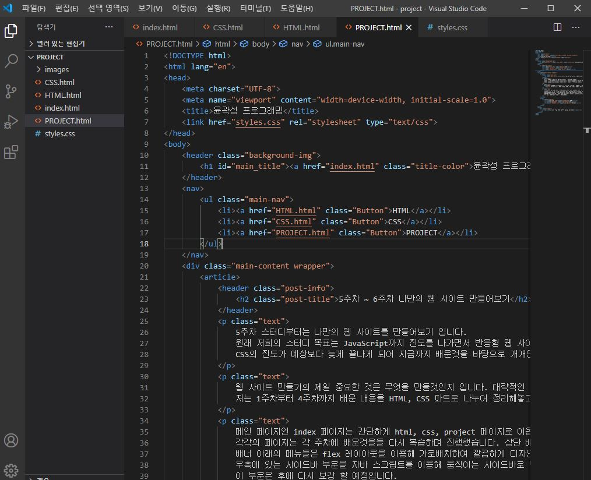

5주차 ~ 6주차 나만의 웹 사이트 만들어보기
5주차 스터디부터는 나만의 웹 사이트를 만들어보기 입니다. 원래 저희의 스터디 목표는 JavaScript까지 진도를 나가면서 반응형 웹 사이트를 만들어 보는것이었지만, CSS의 진도가 예상보다 늦게 끝나게 되어 지금까지 배운것을 바탕으로 개개인이 웹 사이트를 만들어보는 프로젝트로 스터디를 마무리 하려 합니다.
웹 사이트 만들기의 제일 중요한 것은 무엇을 만들것인지 입니다. 대략적인 구상을 미리 해두지 않으면 무슨 목적을 가진 사이트 인지 모르는 웹사이트가 만들어질 것입니다. 저는 1주차부터 4주차까지 배운 내용을 HTML, CSS 파트로 나누어 정리해놓고 5,6주차는 웹 사이트를 만드는 전체적인 과정을 기록하는 형식으로 구상했습니다.
메인 페이지인 index 페이지는 간단하게 html, css, project 페이지로 이동할 수 있는 버튼만 만들어 배치했고 각각의 페이지는 각 주차에 배운것을들 다시 복습하며 진행했습니다. 상단 배너는 홈페이지로 돌아갈 수 있게 했고, 배너 아래의 메뉴들은 flex 레이아웃을 이용해 가로배치하여 깔끔하게 디자인했습니다. 우측에 있는 사이드바 부분을 자바 스크립트를 이용해 움직이는 사이드바로 만들려고 시도해보았지만 아직 구현을 하지 못했습니다. 이 부분은 후에 다시 보강 할 예정입니다.
